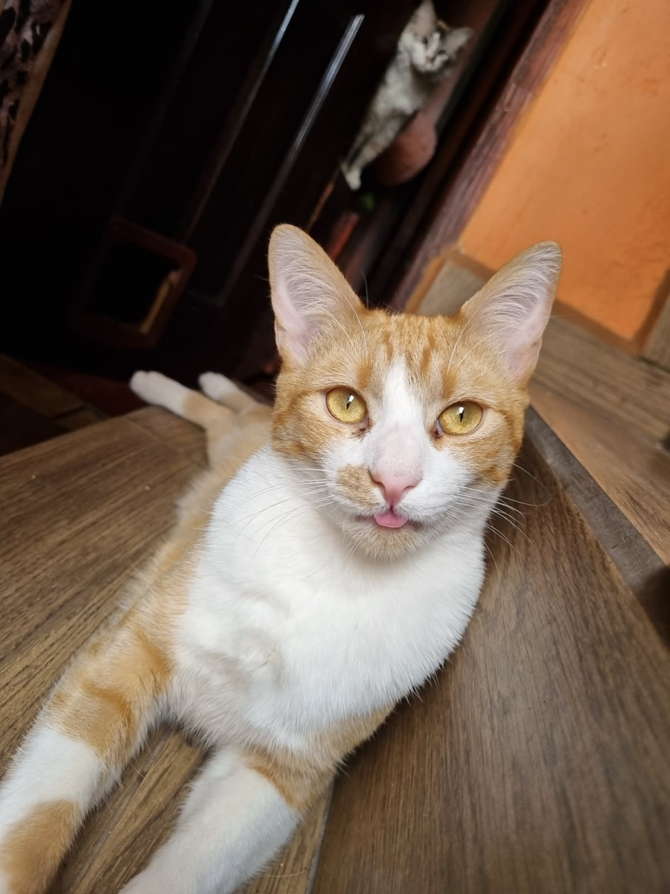

🛡️
Adopciones responsables
Cada gato cuenta con historial médico completo y un proceso de seguimiento post-adopción.
♥Conectamos gatos rescatados con familias amorosas. Cada adopción es un acto de amor que cambia dos vidas.



Somos una plataforma transparente, segura y comprometida con el bienestar felino.
Cada gato cuenta con historial médico completo y un proceso de seguimiento post-adopción.
♥Filtra por personalidad, edad y estado de salud para encontrar a tu compañero ideal.
🐾Trabajamos con rescatistas independientes verificados que cuidan a cada gato con amor.
♥